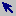
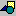
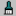
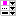
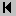
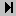
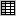
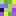

Segmentation Image Editor: SegEditor
by: Russell Ryan
Space Telescope Science Institute3700 San Martin Dr.
Baltimore MD, 21218
rryan@stsci.edu
|
Segmentation Image Editor: SegEditorby: Russell RyanSpace Telescope Science Institute3700 San Martin Dr. Baltimore MD, 21218 rryan@stsci.edu |
This is designed to edit a segmentation map, such as those produced by Source Extractor (Bertin & Arnouts 1996), in a graphical-user interface (GUI). It requires the segmentation map and a corresponding direct image (ideally, the one from which the segmentation map was generated). It loads these two images into two panes and provides basic functionality to zoom, pan, and stretch the images individually. For additional information or if you would like to reference this software, please see the astro-ph listing: Ryan (2018). The latest versions of the software can be obtained from GitHub: https://github.com/Russell-Ryan/segeditor.
This is a fully object-oriented suite, and so the calling sequence is:
IDL> object = obj_new('segeditor',SEGFILE,IMGFILE,[GROUP=group])where SEGFILE and IMGFILE are strings that point to the segmentation map and direct image, respectively. GROUP is a valid widget ID to serve as the group leader, if linking from a separate widget-based program. It is assumed that the User will ensure that these files exist and have the same WCS keywords, as SegEditor currently does not verify these things. Alternatively, the code can be envoked using a classic procedural mechanism:
IDL> segeditor,SEGFILE,IMGFILE,[/help,_EXTRA=_extra]where SEGFILE and IMGFILE have the same meaing as before, but /help displays a basic help menu. The _EXTRA=_extra facilitates passing additional keywords to the object creation. This calling sequence does perform some WCS verification, and so is generally prefered. The automatic garbage collection in IDL will destroy the internal object reference.
Most of the controls are driven by the mouse and the keyboard. To activate the commands, it is generally necessary to left-click on the image of interest, then the commands are:
| Name | Symbol | Description |
|---|---|---|
| pointer |  | Basic mouse state, has no real functions other than nomal image pan, zoom, stretch. |
| delete |  | Click on a region to delete it |
| merge | Drag a line to join two regions | |
| erase | Drag to erase pixels under the cursor | |
| draw | Drag to draw a closed region and create a new source | |
| ungroup |  | Click to disassociate a region from its parent |
| paint |  | Click and drag to paint a given SegID to the pixels |
| range | Drag to draw a box and compute min/max range from the pixels in the box (statistics methods can be changed) |
| State | Description |
|---|---|
| engaged | adjust the opacity between the RGB displayed segmentation image and the grayscale direct image |
| disengaged | adjust the bias/contrast a la ds9 scaling |
| Key | Description |
|---|---|
| SPACE | step the form of the left mouse button |
| Q | Force quit the GUI |
| p | print the image to a postscript file |
| q | quit the GUI |
| r | redo last region event |
| s | save the segmentation map |
| u | undo the last region event |
These buttons facilitate a variety of operations:
| Name | Symbol | Description |
|---|---|---|
| new | Erase all the regions to create a blank segmentation map | |
| save |  | Save the current segmentation map |
| prefs |  | Edit the properties of the GUI |
| text | Edit the properties of the texts | |
| undo |  | Undo the last region action |
| clear | Clear the undo/redo history | |
| redo |  | Redo the last region action |
| table |  | Inspect the regions properties in a tabular way |
| operations | Open sub-GUI to perform additional image operations (dilating and eroding regions, and truncating to the lowest set of positive integers) | |
| random |  | Define a new set of random RGB triplets for the segmentation map |
| help | View this help page |
There are several properties governing the cursor, zoom speed, text displays, statistics methods, and stetching parameters, which can be set by the property-sheet button. The properites of the text fields shown in the main graphics window are set by the text button.